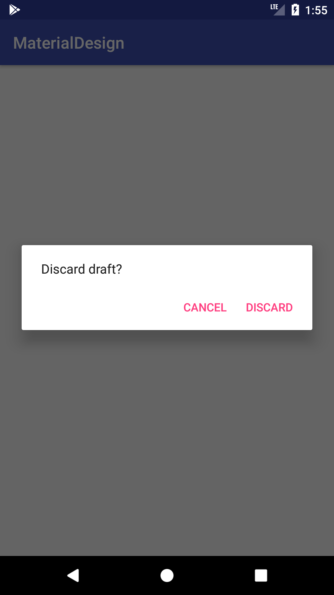
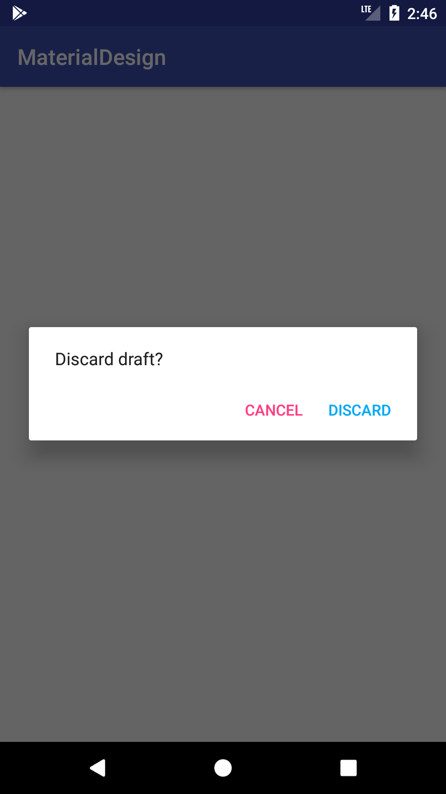
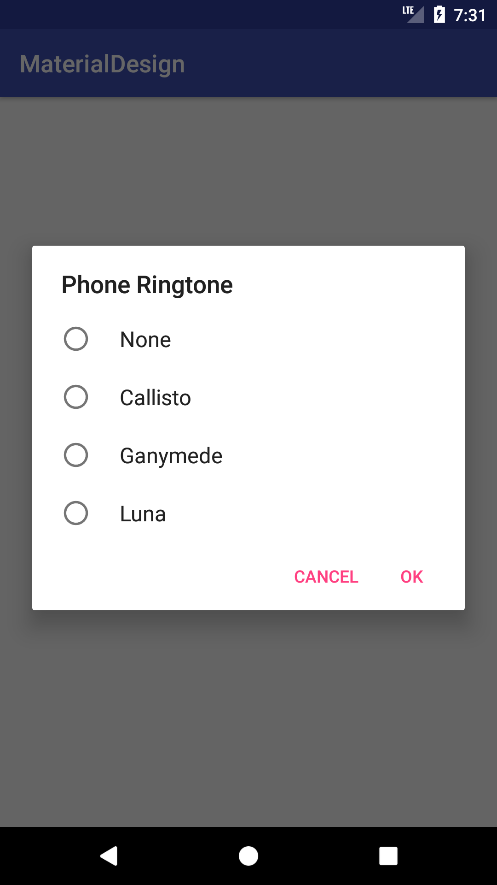
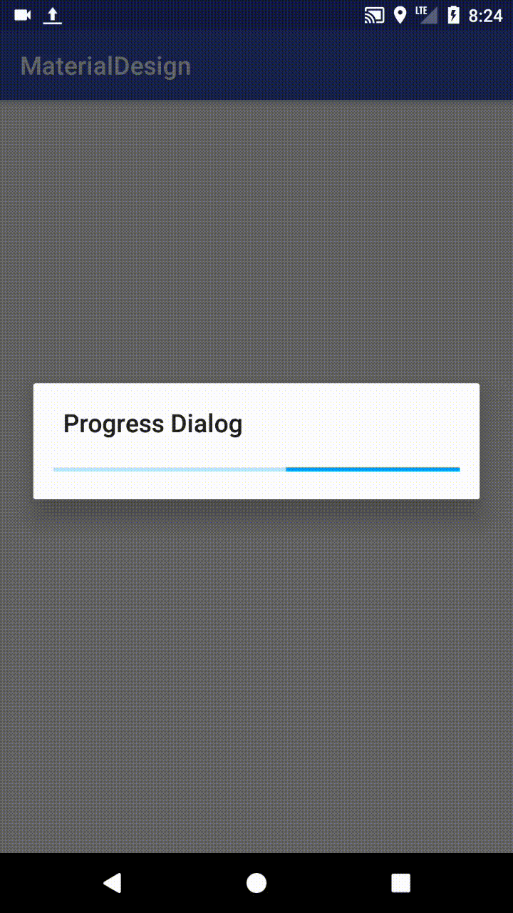

Introduction
在開發App的過程中，有一些情況下，你必須請使用者做一些決定，或是向使用者提醒一些錯誤，這時候就需要用到Dialog，在Material Design出現之前，Dialog的樣式的確不太美觀，接下來我們實際演示，如何使用具Material Design Features的Dialog
如果你使用新版的Android Studio 3.0，專案預設會幫你載入support:appcompat-v7包，創建AlertDialog時，記得引用此包，不要用app內建的
使用系統內的android.app.AlertDialog在4.x版本，顯示效果如下：
5.0以上系統已經預設使用Material Design的風格
如果使用android.support.v7.app.AlertDialog，在4.x版本下，也能有與5.0以上樣式相似的效果
Alert Dialog
常用於錯誤通知、或提示使用者接下來行為/動作
Create an Alert Dialog
接下來我們用代碼來創建一個AlertDialog
1 | new AlertDialog.Builder(this) |
運行效果如下：
使用AlertDialog通常會搭配使用兩個按鈕(flat button)，右邊按鈕通常放置確定/同意…等動作，左邊按鈕通常放置取消/不同意…等動作
1 | new AlertDialog.Builder(this) |
運行效果如下：

Customize the Alert Dialog
改變按鈕的顏色，有兩種方法，第一種是直接在代碼裡定義兩個按鈕的顏色
1 | alertDialog = new AlertDialog.Builder(this) |
運行效果如下：

可以看到右邊的文字顏色已經改變，如果還需要改變左邊按鈕文字顏色可以加入下方代碼
1 | alertDialog.getButton(AlertDialog.BUTTON_NEGATIVE).setTextColor(ContextCompat.getColor(this, R.color.colorLightBlue)); |
第二種方法是創建一個新style，在style裡改變colorAccent顏色，接著使用AlertDialog.Builder的constructor創建有自定義style的Dialog
點進AlertDialog.Builder的代碼，可以發現多態constructor
1 | package android.support.v7.app; |
在styles.xml裡，是創建一個新style，並在style裡自訂colorAccent顏色
1 | <style name="AlertDialogTheme" parent="Theme.AppCompat.Light.Dialog.Alert"> |
接著回到代碼裡，在創建AlertDialog同時，把剛剛自訂的style添加進去
1 | new AlertDialog.Builder(this, R.style.AlertDialogTheme)// 添加style |
運行效果如下：
Confirmation dialogs
確認對話框，常用在尋求使用者做一個行為或是動作的選擇時使用，Confirmation dialogs通常包含標題、選擇內容、確認/取消按鈕
Create a Confirmation Dialog
接下來在代碼裡創建一個Confirmation Dialog範例
1 | // dialogs 裡面的選項 |
運行效果如下：

Customize the Confirmation Dialog
更換style樣式很簡單，與上面AlertDialog第二種方式相同，值得注意的是，套用style後，dialog裡面的內容，也會有改變
運行效果如下：
ProgressDialog
如果你還在用ProgressDialog，那你可要小心了，因為Android官網已經在API level 26時棄用它，官方的解釋是ProgressDialog是一個模態對話框(modal dialog)，它會禁止使用者與App的交互，作為替代方案，可以在App UI裡嵌入ProgressBar作為替代方案，如果想實現對話框的模式，亦可在AlertDialog裡嵌入ProgressBar來實現
在AlertDialog中嵌入含有ProgressBar的layout
這邊很簡單就不附上xml了
layout:
在代碼裡創建AlertDialog，並把ProgressBar添加進去
1 | new AlertDialog.Builder(this, R.style.AlertDialogTheme) |
運行效果如下：
也可以使用Linear Progress Bar

關於ProgressBar更多細節，請參考[MaterialDesign] Android Progress Bar
參考網站:
Android AlertDialog
Android ProgressDialog
Android Dialogs